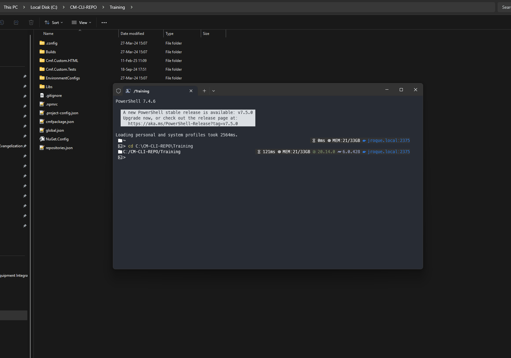
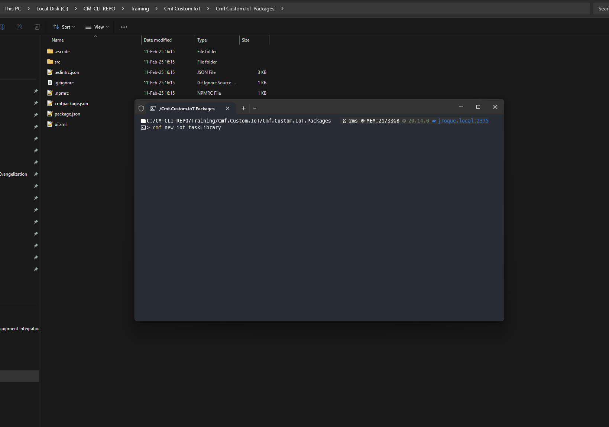
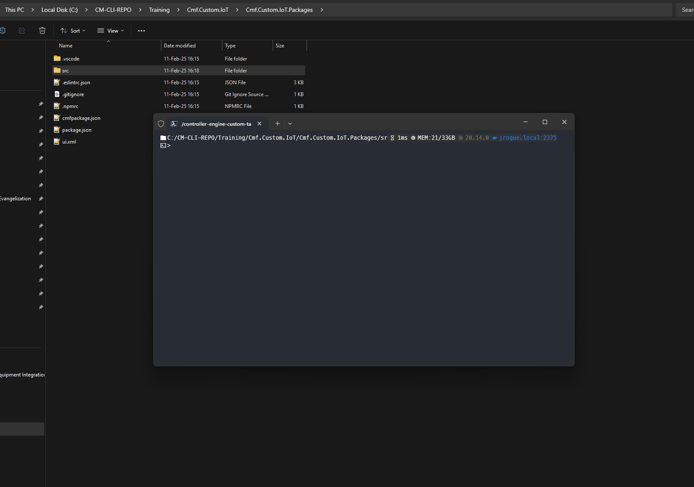
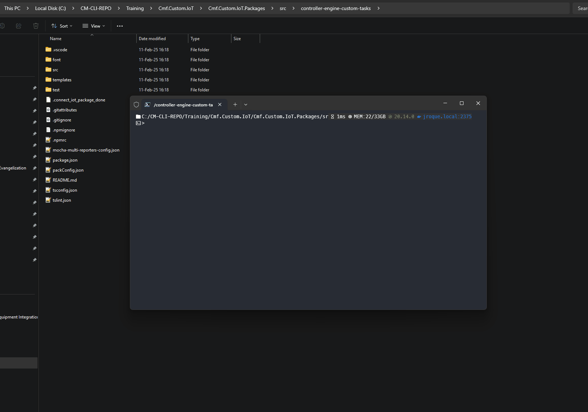
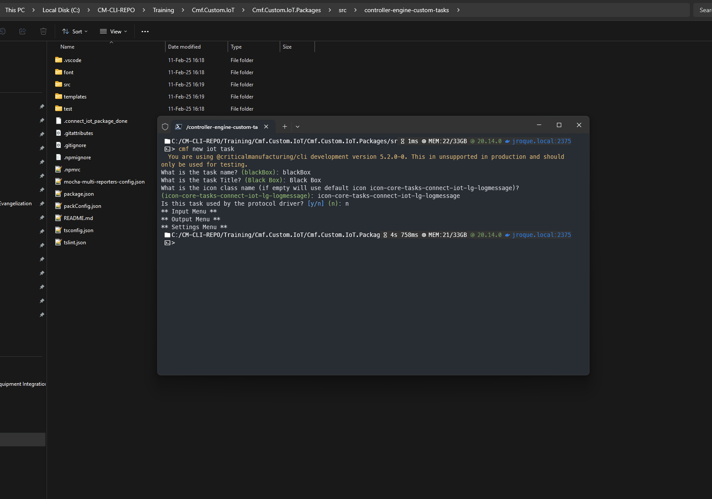
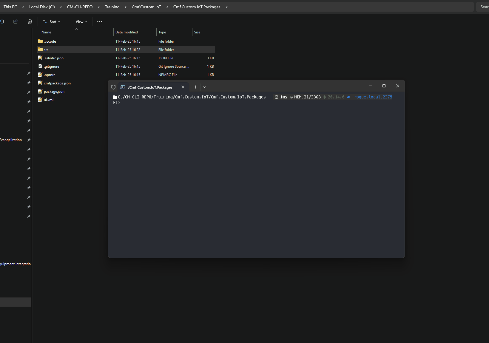

Guide: IoT Scaffolding
This guide explains how to scaffold your IoT customization project for Critical Manufacturing MES. It covers both the modern Automation Task Libraries (ATLs) and the deprecated Tasks Packages Libraries.
Key Concepts
Before diving into the scaffolding procedures, let's define some key concepts:
- Library: In this context, a library is the customization IoT package that user sees on the MES UI, containing a set of drivers, tasks, and converters.
- Driver: A driver implements the communication protocol required to interact with a specific IoT device or external system. It handles the low-level details of sending and receiving data.
- Custom Task: A custom task is a function or method that performs a specific action within the MES workflow. It has defined inputs and outputs and can be triggered by events or other tasks.
- Custom Converter: A custom converter transforms the output of a task into a different format or data type. This is often necessary to ensure compatibility with other systems or tasks.
- Automation Task Library (ATL): The recommended approach for MES v11 and later to create an IoT Task Library. ATLs separate UI metadata from the Node.js package. This metadata required to render tasks and converts on the MES UI, is now stored as a
jsonfile in the MES entity calledAutomationTaskLibrary. This change has improved Workflow Designer experience and removed UI and IoT components inter-dependencies. - Tasks Package Library (Deprecated): An older method for creating custom IoT logic, used in MES v7 through v10. It tightly couples the UI and the custom code, making it less flexible than ATLs.
Supported IoT Code Extensions
Critical Manufacturing IoT supports code extensions through the following:
- Libraries: Creating libraries containing objects subject to IoT extensions.
- Drivers: Implementing protocols to interact with IoT devices or unsupported external systems.
- Custom Tasks: Developing functions or methods with a name, inputs, outputs, and an action.
- Custom Converters: Developing converters to transform task outputs into different formats or types.
Project Structure
When generating the Connect IoT customization with the cmf new iot command, it will generate three packages:
IoT- The IoT root package;IoT.Data- To store master data for IoT-related MES entities (e.g. controllers, workflows, drivers, etc);IoT.Package- To hold all the custom IoT components, like Tasks, Converters and Drivers.
...
📦Cmf.Custom.IoT
┣ 📂Cmf.Custom.IoT.Data # Location IoT Master Data Files
┃ ┣ 📂AutomationWorkFlows
┃ ┃ ┣ 📂FileHandler
┃ ┃ ┃ ┗ 📜Setup.json
┃ ┣ 📂MasterData
┃ ┃ ┗ 📂1.0.0
┃ ┃ ┃ ┗ 📜FileHandlerMasterData.json
┣ 📂Cmf.Custom.IoT.Packages # Location IoT "Tasks Package" or ATL
┃ ┣ 📂projects # Angular components (Tasks Packages, MES v10+)
┃ ┣ 📂src # Non-Angular components (ATLs, or Tasks Packages without Angular)
┃ ┣ 📜.npmrc
┃ ┣ 📜cmfpackage.json
┃ ┣ 📜package.json
┗ 📜cmfpackage.json
...
The IoT.Data package is composed of two folders:
- AutomationWorkFlows - To hold the exported JSON files that constitute the IoT automation workflows to be used in the MES.
-
MasterData - To hold the actual master data files with IoT entities.
IoT Workflow Paths
When referring to IoT Workflows on the IoT master data files, their path should be relative to the AutomationWorkFlows folder.
e.g.: Compare the below master data paths with the previous IoT file structure example.
{ "AutomationControllerWorkflow": { "1": { "AutomationController": "InterfaceController", "Name": "Setup", "DisplayName": "Setup", "IsFile": "Yes", "Workflow": "FileHandler/Setup.json", "Order": "1" } } }
The IoT.Packages should be used as the workspace to create new TasksLibraries (packages that hold Connect ioT runtime components). Inside the TaskLibrary create new tasks, converters or drivers.
Hint
If you don't require the IoT package or any of its sub-packages, simply delete it and remove its references from the root cmfpackage.json file.
Bare in mind, the following project structure variations may occur:
- The
Cmf.Custom.IoT.Datafolder might be namedIoTData. This folder contains configuration and master data related to your IoT solution. - The
Cmf.Custom.IoT.Packagesfolder might be namedIoTPackages. This folder contains the actual code for your custom IoT logic (drivers, tasks, converters). - The
projectsfolder is created only when generating a Tasks Package library with Angular support (MES v10 onwards). This folder contains the Angular components that provide the user interface for your custom tasks. - The
srcfolder is present when you are developing an ATL, or when you are using Tasks Packages but without Angular components. It contains the core logic of your drivers, tasks, and converters.
Scaffolding Procedures
The scaffolding process differs depending on the IoT library type (ATL or Tasks Package) and the MES version.
Automation Task Library (ATL) Scaffolding
Tools
@criticalmanufacturing/cli
Steps
-
Generate the base structure:
cd {{project_or_feature_root_dir}} cmf new iot -
Generate a custom driver (if needed):
cd {{project_or_feature_root_dir}}/Cmf.Custom.IoT/Cmf.Custom.IoT.Packages/src cmf new iot driver -
Generate a custom Task Library (if needed):
cd {{project_or_feature_root_dir}}/Cmf.Custom.IoT/Cmf.Custom.IoT.Packages/src cmf new iot taskLibrary -
Generate a custom Task (if needed):
cd {{project_or_feature_root_dir}}/Cmf.Custom.IoT/Cmf.Custom.IoT.Packages/src/{{library_name}} cmf new iot task -
Generate a custom Converter (if needed):
cd {{project_or_feature_root_dir}}/Cmf.Custom.IoT/Cmf.Custom.IoT.Packages/src/{{library_name}} cmf new iot converter -
Generating a Business Scenario (if needed):
cd {{project_or_feature_root_dir}}/Cmf.Custom.IoT/Cmf.Custom.IoT.Packages cmf new iot businessScenario
Demo
The following images demo the scaffolding procedures for IoT ATL custom library and its components:
-
cmf new iot
-
Generating ATL Task Library

-
Generating a Driver

-
Generating a Task

-
Generating a Converter

-
Generating a Business Scenario

Tasks Package Scaffolding - MES v10 or above
IoT Tasks Package depends on UI
Version v10 introduces a dependency between Connect IoT customization and the GUI when using Task Packages. The GUI requires compile-time access to the Connect IoT customization. Therefore, you must have an HTML package.
Tools
@criticalmanufacturing/cli, @angular/cli, Yeoman
Steps
-
Ensure you have an existing UI/HTML package layer (below we assume it exists at
./Cmf.Custom.HTMLdirectory). -
Generate the base structure:
#Generate base structure cd {{project_or_feature_root_dir}} cmf new iot --isAngularPackage --htmlPackageLocation ./Cmf.Custom.HTML #Install library dependencies cd {{project_or_feature_root_dir}}/Cmf.Custom.IoT/Cmf.Custom.IoT.Packages npm install -
Generate a custom driver (if needed):
cd {{project_or_feature_root_dir}}/Cmf.Custom.IoT/Cmf.Custom.IoT.Packages npx yo @criticalmanufacturing/iot:driver -
Generate a custom Tasks Package Library (if needed):
cd {{project_or_feature_root_dir}}/Cmf.Custom.IoT/Cmf.Custom.IoT.Packages/ npx @angular/cli generate library {{library_name}} -
Generate a custom Task (if needed):
cd {{project_or_feature_root_dir}}/Cmf.Custom.IoT/Cmf.Custom.IoT.Packages/projects/{{library_name}} npx @angular/cli generate @criticalmanufacturing/ngx-iot-schematics:task {{task_name}} -
Generate a custom Converter (if needed):
cd {{project_or_feature_root_dir}}/Cmf.Custom.IoT/Cmf.Custom.IoT.Packages/projects/{{library_name}} npx @angular/cli generate @criticalmanufacturing/ngx-iot-schematics:converter {{converter_name}}
Post-Scaffolding
The @criticalmanufacturing/cli will automatically add an entry to the cmfpackage.json of the IoT package. But the reverse relation from the HTML package layer to IoT must be set manually created:
-
Edit the HTML
cmfpackage.jsonfile and add arelatedPackagesentry, e.g.:"relatedPackages": [ { "path": "../Cmf.Custom.Baseline.IoT/Cmf.Custom.Baseline.IoT.Packages", "preBuild": true, "postBuild": false, "prePack": false, "postPack": false } ] -
Add a dependency in the HTML package's
package.jsonfile, using the command:npm install ../Cmf.Custom.IoT/Cmf.Custom.IoT.Packages-
This command will add an entry like:
"@criticalmanufacturing/connect-iot-controller-engine-custom-tasks": "file:../Cmf.Custom.Baseline.IoT/Cmf.Custom.Baseline.IoT"
-
-
Finally, add code to import IoT customizations to the UI by:
Editing the
app.config.tsfile and add reference to the customization components, as presented on snippet below:import { Metadata as CustomTasks } from '@criticalmanufacturing/connect-iot-controller-engine-custom-tasks/metadata'; export const appConfig: ApplicationConfig = { providers: [ provideRouter(routes), provideServiceWorker('ngsw-loader-worker.js', { enabled: !isDevMode(), registrationStrategy: 'registerWhenStable:30000' }), provideMesUI( { tasks: [ CustomTasks ] } ), provideMetadataRouter() ] };Editing the
app.module.tsfile and add reference to the customization mode, as presented on snippet below:import { Metadata as CustomTasks } from '@criticalmanufacturing/connect-iot-controller-engine-custom-tasks/metadata'; MesUIModule.forRoot({ tasks: [ CustomTasks ] }), ...
Tasks Package Scaffolding - MES v9 or below
Tools
@criticalmanufacturing/cli, Yeoman
Steps
-
Ensure you have an existing UI/HTML package layer (below we assume it exists at
./Cmf.Custom.HTMLdirectory). -
Generate the base structure:
#Generate base structure cd {{project_or_feature_root_dir}} cmf new iot --htmlPackageLocation ./Cmf.Custom.HTML #Install library dependencies cd {{project_or_feature_root_dir}}/Cmf.Custom.IoT/IoTPackages npm install -
Generate a custom driver (if needed):
cd {{project_or_feature_root_dir}}/Cmf.Custom.IoT/IoTPackages/src npx yo @criticalmanufacturing/iot:driver -
Generate a custom Tasks Package Library (if needed):
cd {{project_or_feature_root_dir}}/Cmf.Custom.IoT/IoTPackages/src npx yo @criticalmanufacturing/iot:tasksPackage -
Generate a custom Task (if needed):
cd {{project_or_feature_root_dir}}/Cmf.Custom.IoT/IoTPackages/src/{{tasks_package_name}} npx yo @criticalmanufacturing/iot:task -
Generate a custom Converter (if needed):
cd {{project_or_feature_root_dir}}/Cmf.Custom.IoT/IoTPackages/src/{{tasks_package_name}} npx yo @criticalmanufacturing/iot:converter